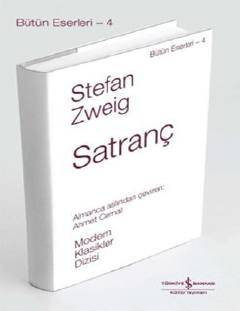

SInson ruhiyati va satranç o'yiniga bag'ruishlangan mashhur psixologik novella.
Stefan Zweig tomonidan yozilgan "Satranç" (Schachnovelle) asari muallifning so'nggi va eng mashhur psixologik novellalaridan biridir. Asar fashizm va inson ruhiyatining murakkab qirralarini dengiz sayohatidagi satranç o'yini fonida ochib beradi.